cross'o'ver / n. 1. Point or place of crossing. 2. Overlapping, esp. from one style or genre to another.
This section deals with a large amount of miscellaneous references, allusions, and crossovers to the outside world; both references made *in* FF games, and references other sources make *to* Final Fantasy. For corrections/additions, go here.
Expand All Images | Collapse All Images
References in Other Square Games to Final Fantasy
Square just can't resist putting some Final Fantasy-isms in some of their other games. Here's a list of them (thanks to videogames.com and Jared Johnson for some of the suggestions and information.)
Dynami Tracer (SNES - unknown release date): This extremely obscure Squaresoft game for the Satelliview (an SNES add-on only released in Japan) was some kind of cross between RPG and racing. In any case, good old Tonberry is one of the racers!
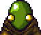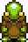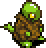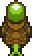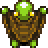
Final Fantasy Legends (GB - released 12/15/89 JP, 1989 NA): Since the "Final Fantasy Legend" games are actually SaGa games with the names changed to cash in, any FF references in them would count as ex-series crossovers. (sent by Angry Turnip, Japanese FFL names sent by Gouki of Borg):
- One boss, the Machine, looks the same as FF1's Warmech. In the Japanese versions they both have the same name: Death Machine.
- Amongst the top tier monsters which can only be obtained as party members are FF1's four fiends. The strongest zombie is Lich, strongest octopus is Kraken, strongest dragon is Tiamat, and strongest snakewoman is Lilith (both Lilith and Kary share the Japanese name Marilith).
- He also notes that FFL uses a number of FF1's sprites. It is likely that the town sprites are the same, and FF1's thieves look the same as FFL's male mutants.
Final Fantasy Adventure (Seiken Densetsu) (GB - released 6/8/91 JP, 1991 NA): This Game Boy title has very little in common with other Final Fantasy games, which is why it is not in our canon game list. One of the commonalities it does have are the Chocobos and Moogles which feature heavily in the storyline. This is actually the first time Moogles were named in a Squaresoft game!
Also, the graphics are very reminiscent of FF3 and FF4 (even the menu screens!).
Secret of Mana (Seiken Densetsu 2) (SNES - released 8/6/93 JP, 1993 NA, 11/24/94 EU): Moogles make another appearance here (as a status ailment, and as a species in the northern part of a forest).
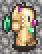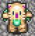
Besides this, the secret Moai face mentioned in In-Series Crossovers makes an appearance here as well!


Live A Live (SNES - released 9/2/94 JP, 1994 NA): This funny little RPG had a tiny FF reference: While playing as Akira in the "Near Future" chapter, you can play the organ in the orphanage he lives in. One of the songs you play is a truncated Chocobo theme. (sent by Trevor Powell)
Secret of Evermore (SNES - released 1995 NA, 2/22/96 EU): The American copy of Secret of Evermore had some very blatant character crossovers. Firstly, Cecil from FF4 now runs a weapons/armor shop and inn in Ebon Keep. The music track for this area is called "Cecil's Town".

Secondly, in the Coliseum fight, several characters from FF6 (from left, Locke, Mog, Relm, Strago, Terra, and Umaro) make an appearance in the stands! Here are the exclusive photos of the events:


Chrono Trigger (SNES - released 3/11/95 JP, 9/27/95 NA): Biggs and Wedge (known here as Vicks and Wedge) make an appearance with their buddy Piette in Norstein Bekkler's lab. (See Star Wars Crossovers)

Seiken Densetsu 3 (SNES - released 9/30/95 JP): Also known as Secret Of Mana 2. The "Magician" enemy from this game is identical to the "Black Mage" Job, right down to the crescent on his hat!
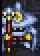
There's also a piece of armor called the "Moogle Smock".
Bahamut Lagoon (SNES - released 2/8/96 JP): An only-in-Japan game. Obviously besides Bahamut himself, as a summon, there's also the Presenter, a sorta-secret monster who also happens to appear in FF6 as an optional mini-boss. One of the final forms of Thunderhawk, "D.Chimera", looks very similar a monster of the same name from FF5.
Also, certain of the forms of Salamand, the hero's dragon, appear similar to monsters from FF6. Deboahan looks like the Allosaurus, White Warrior looks like the Buffalax. (pictures sent by Ket Shi)


Super Mario RPG (SNES - released 03/08/96 JP, 03/09/96 NA): A hidden boss in Monstro Town - Culex. Although this boss doesn't appear in any Final Fantasy, his cohorts, the four Crystals, should be familiar to everyone! His boss music is identical to that of FF4, and the victory music is the ever-loved Victory Fanfare.
Also, there's a dragon-like monster called "Bahamutt" in the game. (sent by Joey Martin)
Tobal 2 (PSX - released 3/31/97 JP, 4/25/97 NA) : Chocobo is one of the hidden characters .

Xenogears (PSX - released 2/11/98 JP, 1998 NA) : Hanging on the wall in a house in the upper-class Solaris community is a poster of Tifa!

Also note that two characters here are named Roni and Rene, which are the same as the middle names of Edgar and Sabin from FF6. See Name Origins for more info on that.
Parasite Eve (PSX - released 3/29/98 JP, 1998 NA) : The hanging banner in front of the Museum Of Natural History has a Chocobo on it.

Also, inside the museum, in the prehistoric bird section, there is a display of a suspicious looking yellow bird.
Ehrgeiz (PSX - released 1/17/02 JP, 4/30/99 NA, 2/9/00 EU): See sub-page.
Legend of Mana (PSX - released 7/15/99 JP, 6/7/00 NA): If you go to the city of Geo and you go to the Magic Academy, look at the sign in front of the building; a small black mage can be seen clearly on the sign. (sent by Jeff M.)
A bard named Gilbert (the JP name of FF4 Edward) is a minor character.
Parasite Eve II (PSX - released 12/16/99 JP, 2000 NA, 8/25/00 EU): writes that one part of the game has Aya trying to find a cure for a computer virus known as "Cloud" - the antivirus is called "Aeris". (sent by Denisse)
One of the central enemies in the game, No. 9, wields a gunblade. One of Aya's secret weapons (a 12 gauge rifle) is also called a gunblade.

Vagrant Story (PSX - released 2/10/00 JP, 5/15/00 NA, 6/21/00 EU): This game was made by the same team who did FF Tactics, so of course they'd stick some references to FFT in it. For starters, a lengthy quote in the stunning introduction sequence is attributed to "A.J. Durai" - better known as Alazlam from FFT.
Four of the items in the game are "Agrias's Balm", "Beowulf", "Orlandu", and "Altema".
The Bouncer (PS2 - released 12/23/00 JP, 3/5/01 NA, 6/22/01 EU): A character, Volt Krueger, has a Cactuar in a logo on his jacket. (sent by Cactuberry)

Kingdom Hearts (PS2 - released 3/28/02 JP, 9/16/02 NA, 11/15/02 EU): See sub-page.
Star Ocean 3: Till the End of Time (PS2 - released 2/27/03 JP, 8/31/04 NA, 10/01/04 EU): At the beginning of the game there is a terminal that gives the weather, predicting a possible squall. The game then updates your in-game dictionary with the word "squall" which reads as such:
"A sudden torrential rain shower accompanied by powerful winds, mainly occurring in tropical regions.
Speaking of squalls... Oh, never mind."
(sent by Paledim)
Kingdom Hearts: Chain of Memories (GBA - released 11/11/04 JP, 12/07/04 NA, 05/06/05 EU): This is something of a sidestory to Kingdom Hearts, although it incorporates a lot of elements that are seen in Kingdom Hearts II. The storyline of the game is based on Sora's memories of Kingdom Hearts 1, so nearly all the same crossovers that showed up in the first game (including characters, magic, keyblades, etc.) show up here as well. You can summon Cloud in battle where he can do Cross-Slash or Omnislash. The enemy cards also have FF abilities: Maleficent - Overdrive, Hades - Berserk, Wight Knight - Float, Oogie Booge - Regen, Vexen - AutoLife.
Show Screenshots
Dragon Quest & Final Fantasy in Itadaki Street Special (PS2 - released 12/22/04 JP): Itadaki Street is a series of games similar to Mario Party that first appeared on the NES. The series has always been popular in Japan, but this is the first time Final Fantasy elements have been in it, let alone an integral part of gameplay. It includes the characters of Tidus, Yuna, Auron (FF10), Yuna, Paine, Rikku (FFX-2), Cloud, Aeris, Tifa, Sephiroth (FF7), Squall, Rinoa (FF8), Mog, TaruTaru (FF11), Vaan, Ashe (FF12), and the chocobo. The featured stages are Midgar (FF7), three airships, Alexandria (FF9), Kilika (FF10/X-2), Thunder Plains (FF10/X-2), and two unnamed places from FF12. Shiva, Ifrit, Mandragora, Ramuh, Eiko, and Bahamut also make appearances. Official Website.
Cover art, Vivi & Chocobo, FFX-2 character art, FF7 character art, Group art, Cloud in-game, Cloud in-game 2, Tifa in-game, Chocobo mini-game, gameplay, gameplay 2, Midgar board, Midgar Board 2, Midgar Board 3, Thunder Plains (sent by Alex C.)
Egg Monster Heroes (DS - released 3/24/05 JP): The moogles make an appearance in this game as a usable monster. The moogle is dressed up as RoboCop and says "Thank you for your Kupo-peration" before killing his enemies. (sent by Jonathan Watson)
Kingdom Hearts II (PS2 - released 12/2/05 JP, 3/28/05 NA, 05/26/06 EU): See sub-page.
Mario Hoops: 3 on 3 (DS - released 7/27/06 JP, 9/11/06 NA, 10/26/06 AU, 11/10/06 EU): In this game licenses by Nintendo, but developed by Square, some job classes from Final Fantasy make an appearance as playable characters here, such as the Ninja, White Mage, Black Mage, Moogle, and Cactuar. Some enemies also show up to torment your player - Bombs and Malboros. There is also a secret stage called Malboro Garden - a swamp with two Malboros that attack with Bad Breath.
The World Ends With You (DS - released 07/27/07 JP, 04/21/08 NA): The following was sent by Torklid Balog.
Some of the pins in the game are named after FF summons, these are pins 242-245 and are named Tin Pin Ifrit, Tin Pin Shiva, Tin Pin Golem and Tin Pin Bahamut respectively.


Item # 472 (a hint one can buy) has this description: Playing Reaper Creeper requires Matoya's spell, but "NEERC SEVAS EHT TARDNALD LOH" is a mouthful, so most folks don't bother. (if one does hold the L and R buttons at the save screen one is shown how much time one has used.) [This is a reference to the famous "TCELES B HSUP" message that the brooms in Matoya's cave said in FF1.]
At a certain point in the game, a villain named Sho Minamimoto uses a super attack named "Level i Flare" a reference to the "level # Flare" spells. The letter i represents an imaginary number, one that can be found by drawing the square root of a negative number.
From Spencer Thompson: In the "Another Day" scenario, one of the main Reapers calls out into a crowd, referencing FF7: Advent Children.
Higashizawa: Hurry and sign up! Dilly-Dally Shilly-Shally!
Neku: Dilly-what? What the heck does that mean?
Chocobo Games
These three games (Chocobo's Mysterious Dungeon 1 and 2, and Chocobo Racing) are almost part of the FF series, but not quite. Basically, everything is dumbed down and cutesied-up. Here's a list of what appears where (unfortunately, Chocobo's Mysterious Dungeon 1 was never translated into English, so my information is rather sketchy.) There are several more monsters which are direct from FF games, as well.
Chocobo no Fushigi Dungeion (Chocobo's Mysterious Dungeon) (PSX - released 12/23/97 JP): Like any other RPG, the player takes on the role of an ever-changing Chocobo. With his moogle companion Atra, they travel to a Chocobo gardener's house. This gardener has uncovered a violet crystal in his garden and has become possessed by it. When he invites you in, he kicks you down into his cellar, and thusly, the dungeon, where your adventure begins.
Characters: Mog
Jobs: Black Mage
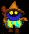
Items: Potion, Hi-Potion, Elixir, Remedy, X-Potion
Summons: Mist Dragon, Shiva, Ifrit, Unicorn, Ramuh, Titan, Phoenix, Carbuncle, Leviathan, Odin, Bahamut, Typoon/Chupon
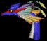 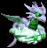 (Leviathan, Mist Dragon)
Magic: Bio, Death, Teleport, Gravity, Flare, Meteor, Holy, Quake, Ultima
Monsters: Ahriman, Behemoth, Bomb, Cactuar, Cockatrice, Goblin, Imp, Kraken, Lamia, Magic Pot, Malboro, Omega, Pudding, Sahagin, Tonberry, Ultros
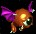 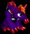 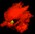 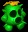 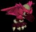 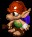 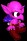 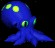 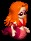 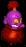 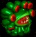 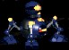 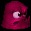 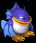 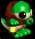 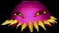
Chocobo's Dungeon 2 (PSX - released 12/23/98 JP, 11/30/99 NA): Some say it's like Secret of Mana with a turn-based battle system. Chocobo is once again paired up with Mog, where they travel to a small beautiful village. However, this village has many inpenetrable buildings, indecipherable ruins, and, of course, mysterious dungeons within.
Characters: Mog, Cid, Ultros
Jobs: Black Mage, White Mage
Summons: Ramuh, Shiva, Ifrit, Titan, Sylph, Carbuncle, Unicorn, Odin, Bahamut, Ashura
Magic: Aero, Tornado, Blizzard, Fire, Thunder, Drain, Quake, Slow, Poison, Sleep, Mini, Toad, Confuse, Silence, Haste, Gravity, Meteor, Death, Flare, Bio, Ultima, Holy
Items: Potion, Hi-Potion, Elixir, Antidote, Remedy, X-Potion, Bomb Spirit (Bomb Essence), Genji Equipment, Mythril Equipment, Ribbon
Monsters: Bomb, Goblin, Sahagin, Behemoth, Lamia, Ahriman, Tonberry, Molbol, Cactuar, Magic Pot, Omega
Other: Dalton of Zeal notes
that the "Theme of Love" music track is identical to a similarly named track
in FF4.
Chocobo Racing (PSX - released 3/18/99 JP, 7/31/99 NA): One day, Chocobo visits Cid at his laboratory, who provides him a new invention called the Jet-Blades CR, which increases Chocobo's speed greatly. This results in a great many races, culminating in a showdown with Bahamut.
There's a racing track called the FF8 Track. Simon Ammundsen provides this blurb, as well as all the music info for this game:
"On the FFVIII Circuit, you can see various monsters (the Malboro is the most prominent) and also a load of Glabadian Soldiers at one point. It also resembles the Bird's Eye View of Deling City a bit. What I mean by this is that whenever you seen Deling City from the President's microphone in FF8, there's a definite shape to the city. The FF8 circuit is almost the same shape. You can also see the front gate of the presidential residence, and there are screens showing the original Fighter/Warrior and Chocobo sprites from the NES series. Gysahl greens are advertised all around the track."
Characters: Mog, Cid, Bahamut, Cloud, Squall, Aya from Parasite Eve
Jobs: Black Mage, White Mage
Monsters: Goblin, Behemoth, Cactuar
Spells: Fire, Thunder, Haste, Death, Ice, Ultima, Mini
Places: Mythril Mine
Other: Moomba (species from FF8).
Music:
Track 1: Cid's Test Track - The main chocobo tune. Obviously.
Track 3: The Ancient Gate - If you listen really carefully you will actually notice that it's a really bizarre (albeit really cool!) remix of the Boss theme from FF3. Keep listening to it and trying to associate the aforemementioned tunes.
Track 4: Mithril Mines - Mount Gulug.
Track 5: Black Manor - The "Magician" Tune from FF2.
Track 6: Floating Gardens (Mysidia) - The tune is "New Origins" which is the ending to FF5. Also, the name Mysidia is a mage village in FF4 and FF2.
Track 9: Fantasia - The Final Boss tune from FF3j.
Track 10: FFVIII Circuit - The Battle Theme from FF8. Obvious.
Character Themes:
Cid: Cid's Theme from FF4
Black Mage ("Magician March"): Remix of the Mysidian theme from FF4.
Mog: A slightly altered version of Mog's theme in FF6.
White Mage: City Theme from FF1.
Goblin: A remix of "Pirates Ahoy!" from FF5.
Behemoth: The Crystal Cave tune from FF3. The Chocobo Racing Remix is truly awesome.
Others: (NOTE: These are the names of the tunes in the Sound Room option.)
"Spooky-Wooky!" Fear tune - This is how the FF3 Final Boss theme opens up.
(It plays twice then fires up the bit used for the Fantasia track).
"La-La Legend" - Plays at any time relating to the Magicite Crystal legend. The Crystal Prelude with a little kid going "La la la" over it.
"Chocobo Creatin'" - Remix of the FF3 Fat Chocobo tune.
"Chocobo Choosin'" - Title screen, the Chocobo theme.
The Gurgu Volcano theme is a remix of the Emperor Palamecia battle in FF2, and Golem's Theme is a remix of "Ancient Castle", the song played in Phin Castle. (sent by Dalton of Zeal)
Chocobo World (PSX - released 12/31/99 JP): This little game was included in FF8, but could only be accessed by a peripheral called the PocketStation, a kind of memory-card device only available in Japan. However, it is playable on the PC version of FF8. The basic gameplay is to take a baby chocobo and raise its strength, similar to a Tamagotchi or Pokemon. The purpose of this game-within-a-game is to gain rare items, weapons, and even GF's that are harder to find elsewhere. There are Moombas that give you Money, and Cactuars that give you items. When get into a battle, The battle theme is 'Hurry Faster' from FF7. And when you die, and you rest up your HP, it is 'Good Night, Until Tomorrow' from FF7. And lastly, you can find a fire, a beach, or picnic table (that's what it kinda looks like) and the music is just the beginning of 'Waltz de Chocobo' from FF7. (sent by J4K0)

Chocoboland (GBA - released 12/13/02 JP): Not much is known about this relatively recent game, except that its some sort of dice puzzle game. It's played a little like monopoly. This picture shows the Chocobo, Black Mage, White Mage, and Carbuncle. (picture sent by Marek 14)
References in Other Video Games to Final Fantasy
The Legend of Zelda: A Link to the Past (GC - released 11/21/91 JP, 04/??/92 NA, 09/24/92 EU): The enemy known as a wizzrobe bears a resemblance to a Black Mage in this game. However, the same enemy in Zelda games before it and after bears little to no resemblance to this version or the Black Mage.
Lunar 2: Eternal Blue (PSX - released 5/27/99 JP, 12/15/00 NA): At one point in the game, the party visits a gypsy camp. There is a big bird that pulls the caravan. When you talk to the girl nearby, she tells you "Oh, that? That's a choco... a chuckubuu." The bird is referenced as 'chuckubuu' afterwards. (sent by Marek 14)
Yu-Gi-Oh! Forbidden Memories (PSX - released 12/9/99 JP, 3/20/02 NA, 11/22/02 EU): This pic shows what certainly looks like a Black Mage in the card menu. (sent by Gilgamesh)

Growlanser II (PS2 - released 7/26/01 JP): There is a transport animal that looks much like a chocobo. When talked to, it even responds with a "Kwahh-eeehh". (sent by Zoghade)
Super Smash Brothers Melee (GC - released 11/21/01 JP, 12/2/01 NA, 5/24/02 EU): Three of the random names chosen in the name entry screen are Vivi, Lulu, and Odin. (sent by Joey Martin)
The Elder Scrolls III: Morrowind (XBOX - released 6/06/02 NA): A dungeon crawl in the main quest brings the player to a crypt called "Kefka Burial". This can be verified by visiting Ilunubi near the city of Gnaar Mok. This could be a coincidence, but there are a few references to other games in here as well, such as Pokemon (e.g., Marowak's Spine, Weepingbell Hall, Kakuna Burial). (sent by Jason Carleski)
Tales of Symphonia (GC - released 8/29/03 JP, 7/13/04 NA, 11/19/04 EU): There is a guy in "the slums" of a big city who says "I'd heard there was a cute flower-seller in here, but...I guess it was just a false rumor." This is a reference to Aeris from FFVII. (sent by Red Mage)
Dragon Quest Heroes: Rocket Slime (NDS - released 12/01/05 JP, 9/19/06 NA): There's a platypus named "Ducktor Cid", as well as a big white slime named the "Crystal Chronicler".
Makai Kingdom: Chronicles of the Sacred Tome (PS2 - released 3/18/05 JP, 7/26/05 NA): Two of the randomly generated names are Tifa and Ramza. (sent by Zero)
Neverwinter Nights 2 (PC - released 10/31/06 US, 11/03/06 EU): Micah Lemming says: "When I was looking through the Item codes of the game Neverwinter Nights 2: Storm of Zehir, I spotted in the dagger section a weapon called Tohn-Beh-Ri's dagger. To reinforce this allusion, the item code for the dagger is nx2_tonberry."
Phoenix Wright: Ace Attorney Trials and Tribulations (DS - released 8/23/07 JP, 10/23/07 NA): A judge makes a retort, replying with,"I'm no spoony bard!" Sent by Jako Swanson.
References by Other Media to Final Fantasy
These images are from the manga "Ragnarok: Into the Abyss" by Myung-Jin Lee. The artist likes to put crossover characters from Squaresoft games. (sent by Hao Dang)
White Mage
The Zodiac, Cuchulainn
Vincent Valentine
Some FFT Jobs
Red Mage and White Mage
In the manga, Descendants of Darkness (Yami no Matsuei) by Yoko Matsushita, Volume 3, the FF7 characters Cloud, Tifa, Vincent, Cait Sith, and Red XIII can be seen in the background of one of the panels. (sent by Elie)
In the Korean manga, Faerie's Landing, there a lot of FF7 references. Cactuars are often in the background screentoning. The main character Fanta wears a jersey with the name 'Cloud Strife' on it. In one of the issues, in the pictures set between chapters, there is one of a character dressed up as Tifa and Vincent. (sent by Elie)
Ken Akamatsu's (creator of Love Hina) manga Negima! has a few references to Final Fantasy. Yue drank a "Last Elixir" in Volume Six. Nodoka and Konoka were shown dressed as white mages. (sent by The 7K)
In the manga "Genshiken", which is about a bunch of otakus, one of the characters is a cosplayer, and she has dressed up as Beatrix from FF9 and Tifa from FF7. Some tiny thumbnails can be found here. (sent by Pablo Ruiz)
"Robot Chicken", a stop-motion animated show on Adult Swim once had a sketch of characters from Final Fantasy 7 working at a fast food restaurant. The sketch in its entirety can be found on YouTube.
The Love Hina manga has made a few references to Final Fantasy. In Volume 3, page 37, frame 6, you can see Squall and Rinoa sweat-drop at Naru and Keitaro crashing into a shelf of plushies. In Volume 4, you can see a Cactuar high on a toy shelf. In Volume 12, Keitaro explains his sudden use of Motoko's 'Boulder Cutting Blade' by saying "Think of it as Kimahri's Lancet ability." (sent by Shadic the Hedgehog, picture by Zero_Cass)
Composer Chris Opperman created a piece called "Reviving Aeris".
"Liberi Fatali" and "Fithos Lusec Wecos Vinosec" were played during the women's synchronized swimming event in the 2004 Summer Olympics.
In "Higurashi no Naku Koro ni" (When Cicadas Cry), a visual murder-mystery novel in doujinshi style, the character "Rena Ryuuguu" was named after Reina/Lenna from FF5 (Rena's real name is Reina). The creator's name, Ryukishi07, is also a reference to Reina. The "07" is pronounced "reinana" and Ryukishi means "Dragon Knight" (this is more of a reference to owning the dragon, than the job of dragon knight or dragoon. (sent by Hao Dang)
The NBC site hosts a fictional blog to promote its TV drama "Heroes", written by the character Hiro Nakamura (that's a pun -_-). In it, he lists the Final Fantasy series as one of his favorite games, and writes about how he wishes he had more time to complete FF12. (sent by Hao Dang)
The 2000 movie Charlie's Angels shows two (?) children playing Final Fantasy 8 (you can distinguish Squall and party fighting a grat in the training center) at home before a naked Drew Barrymore comes to their window. That's what I call a good night.
straybullet writes that a Korean band called "Drunken Tiger" released an album in 2000 named "The Great Rebirth". The second track in the album is called "Final Fantasy" and references the Cosmo Canyon theme from FF7.
Also from straybullet: In 2006, a Korean singer named Ivy made a music video for a song called "Sonata of Temptation". The music video is essentially a direct parody/recreation of the fight between Tifa and Loz in Advent Children, and she was actually sued by Square Enix!
The webcomic Order of the Stick features the cast of FF6 in a cameo comic.
References by Final Fantasy to Other Games
The first game to ever have had the honor of being ridiculed by a Final Fantasy game is the one and only Dragon Quest. In the first FF, a gravestone reads "Here lies Erdrick". The main competition for Final Fantasy was Dragon Quest (Dragon Warrior in North America); in fact, it came out before FF and some say it was even the inspiration for FF. The warrior (not the one you play, one that died a long time ago) featured in this game was Erdrick (Loto in Japan). In the original Japanese, this gravestone read "May Link rest in peace" - referring to the Legend of Zelda series. The line references Link in most versions of the game; the only ones which have Erdrick are the American NES version, the European PSX version, and the PSP version.

In FF5 Advance, a teleporter in the bonus dungeon references the famous "Welcome to Warp Zone!" line from the original Super Mario Bros.

In FF9, the statue in Lindblum Castle says "There's no place to put the medal..." when you examine it. Since there's no medal mentioned anywhere in FF9, this is probably a reference to Resident Evil 2, where you have to put a medal into a fountain statue and a similar message occurs if you examine the wrong statue. (sent by Palmer of the Turks)
In FF9, the two people running Lindblum's Synthesis Shop are named Torres and Wayne, the two people who run the ammo station in Parasite Eve.
In FF7, after Cloud is rescued in Mideel, he mumbles "zeno...gias..." - a reference to Xenogears. The PC version apparently changed it to "xeno...gears". The first rant he has is a reference to Small Two of Pieces, the vocal song from Xenogears. One of its chorus lines reads "Broken mirror, a million shades of light".


Final Fantasy Tactics Advance FFTA mentions the rabite, or "lucky rabbit" in its rumors about poaching. A rabite is a weak, basic monster in Square-Enix's Seiken Densetsu/Secret of Mana. (sent by Ket Shi)
FFX-2 has an accessory called the "Rabite's Foot" that raises your Luck by 100. A rabite is a weak, basic monster in Square-Enix's Seiken Densetsu/Secret of Mana, which, ironically, does not have feet. (sent by Ket Shi)
Brody Phillips, the localization director for FF9, says in an interview with US PlayStation magazine "In the opening sequence of Alexandria, Puck says to himelf, "Engage according to mission parameters!". This is a reference to the PC Game, Unreal Tournament. (sent by Cain Highwind)
In FF1: Dawn of Souls, in Whisperwind Cove, you will meet this guy who directly quotes the first line of Kingdom Hearts

References by Final Fantasy Games to Popular Culture
Star Wars References
The entire series has had snippets of references to Star Wars, including the names of Biggs and Wedge which are used in nearly every Final Fantasy game and then some. Biggs Darklighter and Wedge Antilles are the names of Luke Skywalker's wingmen in his run on the Death Star in Episode IV: A New Hope. They show up in the following roles in the following Final Fantasies:
FF6: Vicks and Wedge are two imperial soldiers in MagiTek armor who accompany Terra in the beginning of the game. (NOTE: Vicks is a mistranslation of Biggs which translates as Bi-G-Gu-Su. The B and V are interchangeable in Japanese)
FF7: Two minor members of AVALANCHE, under Barret's tutelage. Killed in the plate drop.
FF8: A captain and subordinate of the Galbadian Army, who continually get demoted with all their screw-ups.
FF10/X-2: Two separate NPC's who double as recruitable Blitzball players.
FF12: The guards at Nalbina Town are named Deweg and Gibbs.
FF4:
The name of Baron's airship force is called the Red Wings, Luke's squadron from Episode IV: A New Hope.
The second airship that the party commandeers is named the Falcon, possibly after the Millennium Falcon.
FF6:
The scene where Locke rescues Celes from South Figaro.

FF7:
Nanaki (Red XIII's real name) is an anagram of Anakin (Skywalker). (sent by Snesman)
Red XIII itself is probably a dig at Luke Skywalker's Red squadron from the first Star Wars (Luke was Red Five).
FF7: Before Crisis:
Tierce, Kyneugh, and Kanos, three of the Ravens, are named after minor characters in Star Wars.
FF8:
Piet is the name of one of the executors on the space station taking care of Adel's Tomb. Admiral Piett was one of the imperial officers of the Empire in Episode V and VI.
Nida is a minor character of FF8 who eventually becomes the pilot of mobile garden. Lorth Needa was a minor officer in The Empire Strikes Back, then became Captain.
Martine, the headmaster of Galbadia Garden was called Dodonna in Japan. General Dodonna is the character who briefs the rebel alliance on the attack on the Death Star in Episode IV: A New Hope.
In the Star Wars expanded universe, there is a planet known as Onderon (featured in the game Knights of the Old Republic II: The Sith Lords). Onderon is unique because its largest moon, Dxun, orbits so close to the planet at times that their atmospheres mix together and create a tunnel of air between the two. Dxun is filled with many vicious beasts, which take advantage of the tunnel of air to migrate down to the planet and terrorize the natives. It all bears too much resemblance to the "Lunar Cry" in FF8, where monsters all flood down to the planet, to be a coincidence. In addition, the tomb of the great dark Jedi Freedon Nadd is located on Dxun. This is similar to the fact that the Sorceress Adel's tomb orbits the planet in FF8. (sent by Shigmiya64)
FF9:
Part of Necron's speech at the very end of the game is: "Fear leads to anger. Anger leads to hate. Hate leads to suffering." These words were originally spoken by Yoda in Episode I: The Phantom Menace.
Tactics:
Luke Skywalker and Indiana Jones (well, Luke and Indy) demonstrate battle techniques in the tutorial. (sent by Mark Rosa)
There is a more-than-coincidental resemblance of Orlandeau to Obi-Wan Kenobi.
Real World References
General:
One of the largest references (although not obviously so) is the fact that Chocobos are largely believed to have been inspired by the riding birds from the anime Nausicaa of the Valley of the Wind.
FF1&2: DoS:
In Hellfire Chasm, several men throughout the cave will quote from the movie Labyrinth. Screenshot 1, Screenshot 2, Screenshot 3.
Another character in Hellfire Chasm makes a reference to Homestar Runner.

FF2:
The song "The Queen's Temptation" is actually "Finale: Sujet: Andante" by Pytor Ilyich Tchaikovsky. It is the closing piece of Act I of "Swan Lake". (Sent by Almighty God of Paper)
The song "Waltz" is an excerpt from Johann Strauss II's "Kaiser-Walzer" (Emperor Waltz). (sent by Almighty God of Paper)
FF3:
The ship called Enterprise is named after the one in Star Trek.
The Nautilus has the same name as Captain Nemo's submarine in 20,000 Leagues Under The Sea.
FF4:
There is also a ship here called Enterprise, named after Star Trek.
The four fiends (Barbariccia, Cagnazzo, Rubicante, Scarmiglione) are named after characters who reside in the eighth circle of Hell in Dante's The Divine Comedy.
FF4 Advance:
Cid makes a strange line when talking to Cecil about his airship, which may reference SomethingAwful.com. On that site, users are referred to as goons (this term is also used to describe developers and programmers in the gaming industry).

In the new "Lunar Ruins" dungeon in Rydia's trial, there is a village a couple of floors down, filled with minis, pigs, and toads. Some of the villagers say "I haven't seen you before. Are you local?" This is a reference to "The League of Gentlemen", a british dark comedy that takes place in a xenophobic northern town. The show's shopkeeper asks this of their patrons, and if they answer in the negative, they are never seen again.
At the beginning in Baron, there is a boy running around who exclaims "I can't stop thinking about Dark Knights! They're so cool, and by cool, I mean totally sweet!" This is a reference to the Real Ultimate Power website. (sent by Jeanine)
FF5:
After visiting Karnak for the first time and getting imprisoned, Cid uses the last of his gunpowder to blast a hole in his cell wall, only to break into your cell. This bears a less-than-coincidental resemblance to Alexandre Dumas' "The Count of Monte Cristo", in which the prisoner Abbè Faria burrows through the floor of Château d'If for several years, only to arrive in Edmond Dantès' cell. (sent by Galaway)
When you visit Rix Village for the first time and stay at the Inn, a scene ensues where Bartz reminisces about his parents. However, his mother, Stella, passes out (has some sort of fatal seizure?) and his father, Drogann, runs over screaming "STELLA!!!!!!!". This is an undoubtable reference to A Streetcar Named Desire. (sent by Galaway)
The "I'm A Dancer!" theme is copied from the Havanaise "L'amour est un oiseau rebelle" in the opera Carmen, by Bizet. (sent by Javier Alvarado)
The Piano Theme number 7 is Mozart's "Rondo alla Turca", and number 8 is "Arabesque Nº1" from Claude Debussy. (sent by Javier Alvarado)
FF5 Advance:
From Andrew Csank: The character Mr. Clio, who who tells you your stats, is an obvious parody of the psychic Ms. Cleo.
One character makes a thinly veiled reference to The Simpsons.

FF6:
Locke is asked to choose from three passwords. One, "Rosebud", is a reference to the movie Citizen Kane.
In the scene in the Returners' HQ, the soldier cries "The Empire Cometh!". This is an oblique reference to The Iceman Cometh, a fairly popular play. (sent by Hiryuu)
The Three Stooges, Larry, Curley (sic), and Moe, appear as bosses in the American version of FF6, in Cyan's Dream. They look like children with wings.
The song Johnny C. Bad is a reference to a popular song by Chuck Berry called "Johnny B. Goode", written in 1955.
Getting eaten by a Zone Eater sends the party within the Triangle Islands where they find Gogo and several other people. This could possibly an analog to the Bermuda Triangle and the people who have allegedly become lost within it, though it is more likely the name comes from island's triangular geometry. (sent by Bardpado)
FF7:
The "Loveless" poster in FF7 has the words "My Bloody Valentine" on the side. In 1991, the band My Bloody Valentine released an album called "Loveless". (sent by ermintrude gobstopper)
Junon's cannon is called "Sister Ray" by Scarlett. This is is the name of the last song on the Velvet Underground's White Light/White Heat. (from Trismegistus)
Electric de Chocobo (the theme that plays in FF7 when you meet a Chocobo in battle) is directly based off of the song "Wipeout" from The Safaris. (sent by Cactuberry)
Cinco de Chocobo (the theme that plays when you ride a Chocobo on the world map) has many musical references to "Take Five" by David Brubeck, a jazz standard. They are both in 5/4 time and have identical background tunes. (sent by William J. Coberly)
The plaque on Jenova's forehead in the FMV where Sephiroth takes off its head reads "Made in Hong Kong; All Rights Reserved 1996; Squer Company Limited".
Barret's speech pattern and look was lifted from Mr. T, an 80's pop culture icon.
The "Type D" equipment in Dio's Showroom looks a lot like Asuka's Magma Diver suit from an episode of Neon Genesis Evangelion.
Except for the phrase "gloriosa Sephirosa," the lyrics from Sephiroth's theme song,One Winged Angel, are lifted directly from various parts of Carmina Burana. (sent by Robyn Sumner)
FF7:AC:
Early in the movie, when Tifa takes a call in Cloud's office, the cover for the PSX version of FF7 can be seen on the wall.
The memorial to Meteor and Midgar in Edge has the words "Keep on Rockin in Midgar" inscribed on it, a reference to Neil Young's "Keep on Rockin' in the Free World".
FF8:
The gate in Deling City bears a striking resemblance to the Arc de Triomphe, a famous landmark in France.
FF9:
A minor character in FF9 has a famous line almagated from Dr. "Bones" McCoy and "Scotty" from Star Trek: "Dammit, Jim, I'm a doctor, not a miracle worker!". Screenshot here
The play "I Want To Be Your Canary" has several Shakespearean references - in particular, to King Lear. Two of the main leads in the play are King Lear and his daughter Cordelia; in FF9 this was turned into Leo and Cornelia. Also, the play's author is "Lord Avon". William Shakespeare was born in Stratford-Upon-Avon.
In the beginning of the game, when Steiner does battle with the party, he wil say "Bah! Only a flesh wound!" when he is defeated. This is a reference to Monty Python and the Holy Grail's Black Knight. (sent by Eric Cook)
The Black Mage, and Vivi especially, bears a strange resemblance to Orko, a magician from He-Man who often had his spells backfire for comic relief. Orko came before Final Fantasy so which begat which is indeterminable.
FF10:
When Tidus is in Besaid for the first time, inside the Crusader's tent, there is a character, that says "I'm fixing a hole where the rain gets in". This is a reference to a lyric in The Beatles' song "Fixing a Hole". An interview confirmed that this was a deliberate reference. (sent by Moogle Fan)
After leaving Djose Temple, Tidus mispronounces their next destination, saying they are going to 'Macarena'. Wakka corrects it, and Tidus goes 'Ayyye', an obvious reference to the irritatingly popular Macarena song from the 90's by Los Del Rio. (sent by Pierson)
The name Blitzball first occurred in A Separate Peace by John Knowles, though the games are unrelated. In the novel, Blitzball is a sport that is impossible to win, but focuses on athletic achievement rather than defeat and victory.
FFX-2:
The three girls bear a stylistic resemblance to Charlie's Angels, especially in the first chapter of the game. This can be inferred from the flashy 70's style of their introduction.
During Chapter 5, when you are given a description of the newly added Calm Lands mini-games, you are told that it is "Brought to you by Tobli, Calm Skies Partnership, and the letter Q." This is a reference to Sesame Street, a children's television show, which has a tradition "being brought to you by" a letter or number. (sent by Moogle Fan)
When you visit the Cactuar nation for the first time, if you try to leave before finding out why Marnela called you there, Picket, the probe guide, will tell you to stay, and then will yell "No soup for you!" This, of course, is the catch phrase of the 'Soup Nazi' from Seinfeld. (sent by PaleDim)
At the beginning of the first battle with Yuna/LeBlanc and her henchmen Paine says "I could have danced all night." This is a line (and song title) from the musical "My Fair Lady". (sent by Belinda Nelson)
Battle Quote: At the end of battle, you will sometimes hear Paine will say "Thank you." Rikku will add "Come again." This is the catch pharse of the Simpsons Quik-E Mart clerk Apu. (sent by Chris)
Battle Quote: When spherechanging into the Black Mage, Yuna will sometimes quip "Double, double, toil and trouble." Rikku sometimes says "Fire burn and cauldron bubble." Both of these lines are said by the witches in the Shakespeare play Macbeth. (sent by Chris)
Battle Quote: When Paine casts an ice-based spell, she'll sometimes say "Ice, ice baby." This is a reference to a briefly popular song by Vanilla Ice. (sent by Chris)
Rikku, Brother and others keep calling themselves the "friendly neighborhood Gullwings". This is an obvious reference to the old Spider-Man, who often calls himself "just your friendly neighborhood Spider-Man". (sent by Chris)
In the first mission at Mount Gagazet, Rikku fights against some Recoils sent out by LeBlanc. She responds by going, "Snake... snake... snake!" Might be a reference to the Metal Gear series. (sent by Ket Shi)
Battle Quote: When Rikku changes into a Samurai, she sometimes quips, "Crouching tiger, hidden Rikku." Obviously a reference to Ang Lee's martial arts movie Crouching Tiger, Hidden Dragon. (sent by Ket Shi)
Battle Quote: If Paine casts Flare, she might comment, "You! It's what's for dinner!" This is a parody of an ad campaign by the American Beef Council which says "Beef, it's what's for dinner." (sent by Ket Shi)
Battle Quote: Winning a battle with Yuna as Lady Luck sometimes results in her boasting "Game over, man... game over." This line is said by Hudson, played by Bill Paxton, in the movie Aliens. (sent by Admin God)
In Chapter 4, right before Yuna's concert in the Thunder Plains, Brother says "Spira is going to be killed softly by your song!" This could be a reference to the song "Killing Me Softly" by Roberta Flack, remade by The Fugees in 1996. (sent by Shana and Michael Robinson)
If you look at the file for "Jumbo Cactuar" at Shinra's Bestiary, it says the fiend is "Giant and green, but definitely not jolly". This is a reference to the Jolly Green Giant. (sent by Shana)
Brother says "Achtung, baby. Let's clear the concert grounds." Achtung Baby is the name of a U2 album. (sent by Jackie Castro)
If you nail the prophet as the culprit in the Mi'hen Highroad subquest of Rin's mystery, he'll spout the line: "And I would have gotten away with it too, if it weren't for you meddling kids!". That's a often used reference to Scooby-Doo. (sent by Michael Robinson)
Battle Quote: One of Rikku's quotes when casting Auto-Life is "Here's a quicker picker upper!" This a reference to Bounty paper towels, which has the slogan: "The quilted quicker picker upper". (sent by J.Z.)
Battle Quote: One of Rikku's quotes when using a Fiend Hunter bullet is "Let's do it! Al Bhed tested, Brother approved." This a reference to Kix breakfast cereal, which has the slogan: "Kid tested, mother approved". (sent by J.Z.)
Battle Quote: One of Yuna's quotes when casting Beserk on herself (usually in the Berserker costume) is "Yuna gone wild!" This may be a reference to the Girls Gone Wild series of video tapes. (sent by J.Z.)
One of the Gunner's abilities is called Quarter Pounder, which reduces the target's MP by a quarter. This is a reference to the McDonald's sandwich of the same name. (sent by J.Z.)
One of the Songstress' abilities is called Dirty Dancing, a reference to the movie of the same name. The Dirty Dancing ability enables the party to make critical hits while the Songstress is dancing. (sent by J.Z.)
The first boss, Boris, which is a spider-type, is a reference to "Boris the Spider" by The Who. His "Sticky End" attack refers to one of the lyrics ("He's come to a sticky end/Don't think he will ever mend") and its entry in Shinra's Bestiary reads "maybe he's as scared as you" ("Maybe he's as scared as me/Where he's gone now, I can't see").
Battle Quote: When spherechanging into the gunner, Yuna might say "Resistance is futile." This is a reference to the Borg of Star Trek: The Next Generation. (sent by Anonymus)
In Chapter 5 if you had slept in the cabin each chapter, then Brother has a conversation with Barkeep about loving Yuna. Afterward, if the player goes down to the engine room, Buddy tells Yuna how he found the Celsius.
The story he relates about being lost in a fog on a sea of ice only to be lead to the airship via a gull (a subsequent second gull appearing only to be shot and eaten), is very similiar to the way a former captain recounts being led out of the Anarctic by an albatross (who is also shot and eaten) to a wedding guest in the poem The Rime of the Ancient Mariner by Samuel Taylor Coleridge. (sent by Ben Brahm)
FF11:
A number of quest names contain real world references (sent in by Reev):
- A Pose by Any Other Name - Pun of a quote from Shakespeare's Romeo and Juliet, "A rose by any other name."
- Catch It If You Can! - Reference to "Catch me if you can!", a novel of Frank Abagnale and a Spielberg movie.
- Forge Your Destiny - Most probably a reference to the latin quote, famous during the Enlightment period, saying "Homo faber fortunae suae", that's to say "The man is the forger of his own destiny."
- Give Peace a Chance - Name of the famous John Lennon song.
- Inspector's Gadget! - Reference to the famous detective with the same code-name.
- It's Raining Mannequin! - Reference to the song originally recorded by The Weather Girls, "It�s Raining Men."
- Mirror, Mirror - An episode from Star Trek.
- Over the Hills and Far Away - Name of a Led Zeppelin song.
- The Die is Cast - Famous quote of Julius Caesar, "Alea iacta est," when crossing the Rubicon river and thus, starting the civil war. The phrase indicates a point of no return.
- The Opo-opo and I - Reference to the musical "The King and I." Note that the quest rewards the player with an item called "Opo-opo crown" and the title "King of the Opo-opos" to mark the reference to the "king" of the original title.
- The Postman Always K.O.s Twice - Reference to the crime novel "The postman always rings twice."
- The Prince and the Hopper - Reference to "The Prince and the Pauper" novel.
- The Siren's Tear (and relative item Siren's Tear) - Reference to a Sonnet of Shakespeare (Sonnet 119, What potions have I drunk of Siren tears).
- To Bee or Not to Bee? - Pun of the famous quote from Shakespeare.
- You Call That a Knife? - Reference to a quote of the movie Crocodile Dundee, "You call that a knife? THIS is a knife!"
- Bloody Rondo - an assault rather than a quest, but it mirrors the name of the Castlevania game Rondo of Blood. The main enemy to defeat in the assault is a monster called Count Dracula.
Tactics:
"Lilliputians" (FF Tactics "Tozus Village" WotAW) is from the novel "Gulliver's Travels".
The Hindenburg ("Salvage The Trade Ship!" Proposition) was a German zeppelin which caught fire and crashed in a horrific tragedy several decades ago.
Two directors show up as either enemies or mercenary-shop allies, (Robert) Zemeckis, director of Back to the Future & Who Framed Roger Rabbit?, and (Terry) Gilliam, from The Adventures of Baron Munchausen and Twelve Monkeys. Several other random human characters were named for members of the development team or people they were fans of, such as bands and athletes. (sent by Mark Rosa)
The title of Chapter 4, In the Name of Love. This is the title of a famous song by Queen and Jefferson Airplane (but not the same song). The Japanese chapter title, 'Ai ni subete o', means something like 'all for love'. (sent by Mark Rosa)
Tactics Advance: In two of the "Wanted!" missions, you must fight a guy named Dolce and two brothers whose last name is Gabanna. This is from the designer firm "Dolce & Gabanna". (seny by El Huesudo)
Final Fantasy, all games and animation bearing the Final Fantasy name, and all characters in said games or animation are copyright their respective creators, including but not limited to Squaresoft, Square Enix, Square EA, Tokyo TV, and ADV Films.
 Characters
Characters Places
Places Stories
Stories Species
Species Organizations
Organizations Glossary
Glossary Transportation
Transportation Monsters
Monsters Jobs
Jobs Summons
Summons Items
Items Magic/Skills
Magic/Skills Weapon Types
Weapon Types In-Crossovers
In-Crossovers Ex-Crossovers
Ex-Crossovers Release Dates
Release Dates Name Origins
Name Origins Famous Moments
Famous Moments Music Database
Music Database Features
Features Game Help
Game Help Game Evolution
Game Evolution Square Art
Square Art Fan Flash
Fan Flash Final Fantasy Forums
Final Fantasy Forums Updates
Updates Site Info
Site Info Feedback
Feedback Full Index
Full Index Links
Links Staff
Staff{kind=link}
{kind=link}
{kind=link}
{kind=link}
{kind=link}
{kind=link}
{kind=link}
{kind=link}
{kind=link}
{kind=link}
{kind=link}
{kind=link}
{kind=link}
{kind=link}
{kind=link}
{kind=link}
{kind=link}
{kind=link}
{kind=link}
{kind=link}
{kind=link}
{kind=link}
{kind=link}
{kind=link}
{kind=link}
{kind=link}
{kind=link}
{kind=link}
{kind=link}
{kind=link}
{kind=link}
{kind=link}
{kind=link}
{kind=link}
{kind=link}
{kind=link}
{kind=link}
{kind=link}
{kind=link}